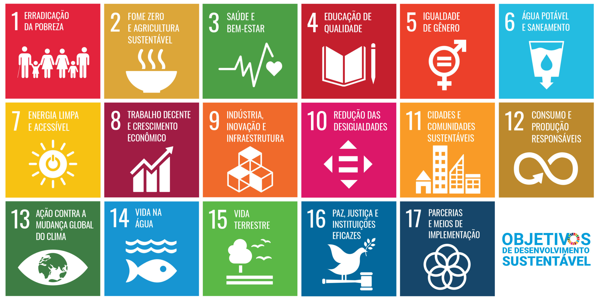

ODS é a sigla para Objetivos de Desenvolvimento Sustentável, determinados em 2015 pela Assembleia Geral das Nações Unidas (AGNU), composta por 193 Estados-membros da ONU. Ao todo, são 17 objetivos e 169 metas globais interconectados a serem atingidos até 2030, estabelecidos na Agenda 2030.
Os ODS da ONU estabelecem práticas a serem adotadas pelos países membros para fomentar o desenvolvimento sustentável no mundo Os 193 países membros da ONU (Organização das Nações Unidas) têm orientado suas decisões seguindo uma nova agenda: são os Objetivos de Desenvolvimento Sustentável (ODS). Lançada em setembro de 2015, durante a Cúpula de Desenvolvimento Sustentável, na Assembleia Geral da ONU, a agenda de desenvolvimento é composta por 17 itens – tais como erradicar a pobreza, a fome e assegurar educação inclusiva – que devem ser implementados por todos os países do mundo até 2030. Os Estados e a sociedade civil discutiram seus papéis para atingir os 17 novos Objetivos de Desenvolvimento Sustentável (ODS), que são resultado de décadas de trabalho durante o desenvolvimento da Agenda 2030. Os ODS foram baseados nos oito Objetivos de Desenvolvimento do Milênio (ODM), que estabeleciam metas para o período entre 2000 e 2015 e obtiveram avanços consideráveis na redução da pobreza global, no acesso à educação e à água potável. A ONU considerou os Objetivos do Milênio um sucesso e propôs dar continuidade ao trabalho já realizado, traçando novas metas para os próximos 15 anos. Surgiram assim os Objetivos de Desenvolvimento Sustentável.
A ODS 1 em si é a mobilização de recursos para erraducar a pobreza; e o estabelecimento de marcos de políticas de erradicação da pobreza em todos os níveis
No ano 2000, i nmundo comprometeu-se em reduzir pela metade o número de pessoas vivendo em extrena pobreza alcançou ganho nótaveis no desenvolvimento humano. Até 2015, a pobreza havia sido reduzido significamente, o acesso ai ensino básico e os resultados da sáude melhoraram, bem como foram realizados progressos na promoção da igualdade de gênero e no empoderamento das mulheres e meninas.No entanto, a erradicação da pobreza extrema continua a ser um desafio, com mais de 700 milhões de pessoas vivendo, globalmente, com menos de US$1,90(PPP) por dia e mais da metade da ppopulação global vivendo com menos de US$8,00 por dia.